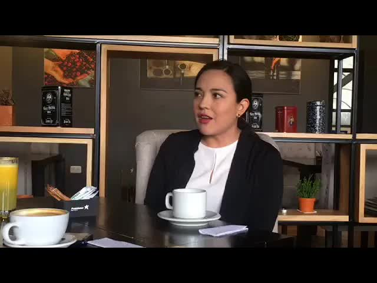
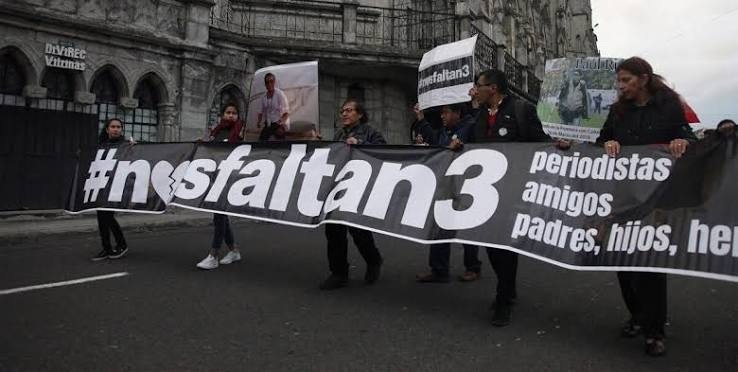
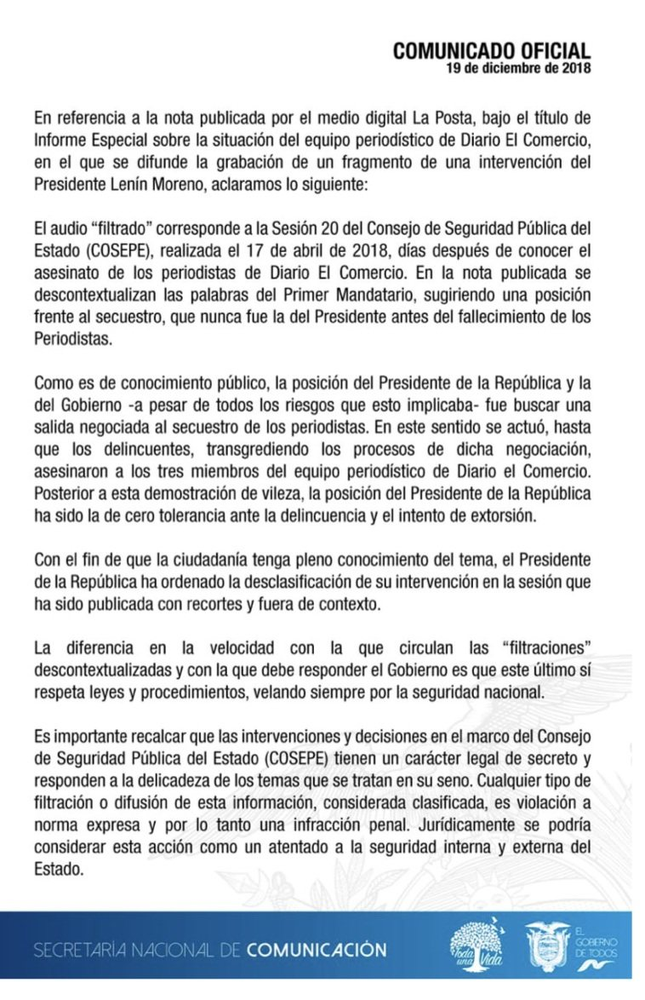
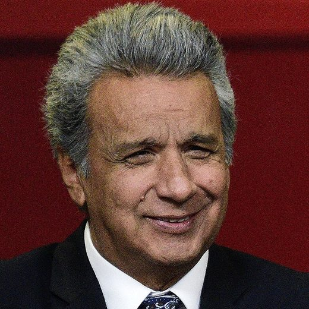
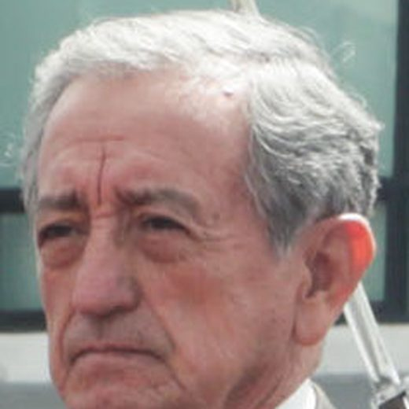
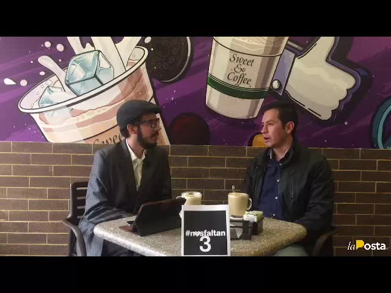
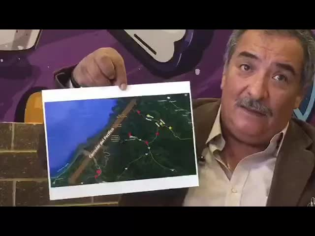
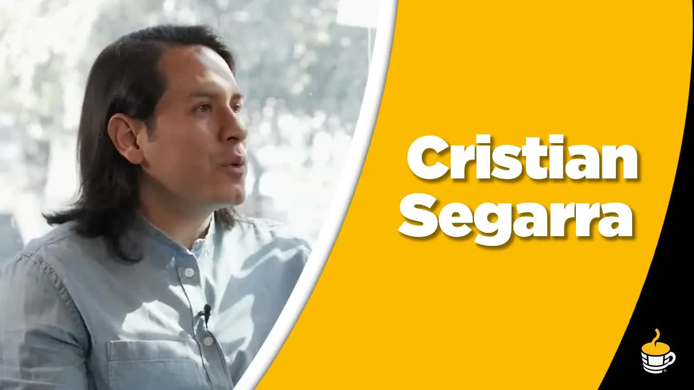
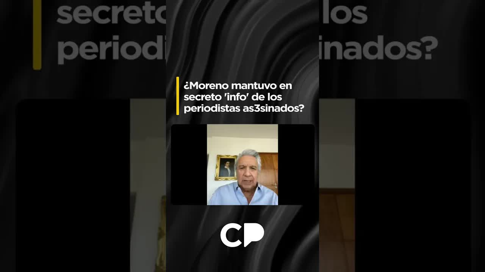

Dec 19, 2018 · The audio program: Did the President lie to us?
In the middle of the kidnapping of Javier Ortega, Paúl Rivas and Efraín Segarra, someone recorded President Lenín Moreno at a meeting of the Public and State Security Council. La Posta published those 45 seconds: 97 words in which the president said that a state's sovereignty went far beyond one or a few lives. The families, meanwhile, had been told a prisoner swap was under way. On April 13, 2018, Moreno promised to declassify all the information. Eight months later, the Defense Ministry had not even answered a letter.
He felt enormous sorrow for the deaths that might come, but a State could not be backed into a corner, and the sovereignty of a State, of a people, of a government, of a citizenry went far beyond one or a few or some lives.

The northern border had been at war for two months when the El Comercio team set out. On January 27, 2018, a bomb exploded at a police barracks in San Lorenzo, Esmeraldas. More detonations followed near a naval outpost and a military one. On March 20, an ambush in Mataje killed four marines: three at the scene and one later in the hospital. Since January, the major media outlets had been sending teams every week to cover the area. On March 26, Javier Ortega, Paúl Rivas and Efraín Segarra reached the military checkpoint in Mataje, asked whether they could cross, and the soldiers let them through. On the other side the Oliver Sinisterra Front was waiting for them, the FARC dissident group commanded by alias Guacho.
On April 2, seven days into the kidnapping, Cristian Segarra, Efraín's son, and Yadira Aguagallo, Paúl's partner, sat down with Andersson Boscán on News and Coffee. The names had been made public the day before. There was proof of life. Segarra explained that his father, 60 years old and with more than fifteen years at the newspaper, was the team's driver, and that the three had not entered through any irregular crossing: they went through where the state was. Two days later, retired intelligence colonel Mario Pazmiño analyzed on the same program the video with Guacho's demands: he wanted the three journalists swapped for three members of his gang, captured in a January 12 operation against an explosives stash.
I see a very remote possibility of this happening. The conditions have changed. The demands they are making for the release of the three journalists put the government in a very weak position and put it up against the wall.
Colonel Mario Pazmiño, News and Coffee, April 4, 2018
According to Yadira Aguagallo, the government told the families there was a willingness to negotiate and that a process was under way to secure the swap of the three. The story kept changing: some days they were told negotiations were happening, other days the international media were told they were not. On April 13, 2018, the government confirmed the murder of the three. That same day, in public and in private, President Lenín Moreno met with the families and promised that all the information would be declassified. He also said a line they held on to: Ecuadorians forgive mistakes, but not lies.
On December 18, 2018, La Posta published a special report with a leaked audio recording: the voice of President Moreno, recorded inside a meeting of the Public and State Security Council, the COSEPE, during the kidnapping crisis. Forty-five seconds. Ninety-seven words. Sources who were present at the councils confirmed to La Posta that the words were spoken at one of the three COSEPE meetings held during the kidnapping. Security council meetings are top-secret information, the state's highest classification level.

President Moreno said he felt enormous sorrow for the deaths that might come, but that a state could not be backed into a corner, and that the sovereignty of a state, of a people, of a government, of a citizenry, went far beyond one or a few or some lives.
Andersson Boscán, summarizing the published audio, December 19, 2018
He felt enormous sorrow for the deaths that might come
There was a willingness to negotiate and a process was under way to secure the swap of the three.
The government to the families, according to Yadira Aguagallo · During the kidnapping, 2018but a state could not be backed into a corner
Some days they were told negotiations were happening; other days the international media were told they were not.
Yadira Aguagallo, News and Coffee · December 19, 2018and the sovereignty of a state, of a people, of a government, of a citizenry
All the information would be declassified.
Lenín Moreno to the families, on the day the murders were confirmed · April 13, 2018went far beyond one or a few or some lives.
Ecuadorians forgive mistakes, but not lies.
Lenín Moreno to the families · April 13, 2018No one from the government called the families after the publication. The August 20, 2018, letter to the Defense Ministry requesting the councils' resolutions did not even receive an acknowledgment of receipt.
Yadira Aguagallo, Nos Faltan 3 collective · December 19, 2018Approximate timeline. The audio is not played or fully transcribed on this page: the phrases in the left column are the summary Andersson Boscán gave on air on December 19, 2018, spread across the 45 seconds in proportion to their length. The only fixed data are the duration (45 seconds) and the word count (97 words). The right column gathers what the families said they heard from the government.
The government did not react that day. It did not say at which of the three councils those words were spoken, in what context, or whether they were the state's final decision or a position that was later discussed and changed. Andersson Boscán said on air that he hoped the government would admit it was the president's voice, that it was a COSEPE meeting and that the recording was illegal, made by someone high up in the state. The date of the words mattered as much as the words themselves: whether they were said while Ortega, Rivas and Segarra were alive or when it was already known they had been murdered.
La Posta set out its editorial position on the same program. It neither defended nor attacked negotiating with Guacho: if the state decided not to negotiate with terrorists, that was its legitimate right. The problem was something else. First, that someone capable of planting a recorder on the president during a national security crisis was sitting in the upper reaches of the state, and that the recording reached a journalist when it could have reached the very group being hunted. Second, that the state told the families one thing and said another in private. Boscán asked the Attorney General's Office to request the audio from La Posta and open an investigation into who made the recording.
The state's positions cannot be one thing in public and another in private. If you prefer not to negotiate, go and tell the country, don't deceive them. It was promised that everything would be declassified, Mr. President. Declassifying everything means declassifying everything, not whatever you feel like.
Andersson Boscán, News and Coffee, December 19, 2018
Publishing 45 seconds of a top-secret council meeting opened two debates at once: what the president had said and whether a journalist could publish it. These are the tracks on that B side, in the order they played.
On the day of publication the government did not react. It did not say at which of the three councils those words were spoken, in what context, or whether they were the state's final decision or a position that was later discussed and changed. No one called the families to explain anything.
La Posta, December 18 and 19, 2018 · Yadira Aguagallo, News and CoffeeThe government responded that what is said at the COSEPE is a state secret and warned that disseminating that information violates explicit rules and constitutes a criminal offense, thereby shifting the debate to the messenger. Minister Andrés Michelena accused La Posta of toying with state security and with the families' pain; the outlet replied that the enemy is not the press. Boscán came under investigation for revealing the audio.
Reaction gathered in the 2026 web edition; the official statement and its exact date have yet to be addedIt neither defended nor attacked negotiating with Guacho: if the state decided not to negotiate with terrorists, that was its legitimate right. The problem was something else. That someone capable of planting a recorder on the president during a national security crisis was sitting in the upper reaches of the state, and that the recording reached a journalist when it could have reached the very group being hunted. And that the state told the families one thing and said another in private.
Andersson Boscán, News and Coffee, December 19, 2018Boscán asked the Attorney General's Office to request the audio from La Posta and open an investigation into who recorded the president inside a security council meeting. No one was ever identified.
Andersson Boscán, News and Coffee, December 19, 2018Moreno told Boscán that he did order the declassification, and that at the security session the representatives of the police and the Armed Forces argued that releasing the information was dangerous for their undercover informants. He called it an excuse that could be accepted. The minutes remain classified.
Lenín Moreno to Andersson Boscán, April 9, 2025The tracks marked To be documented are included for their context value and do not yet have, in this case file, a primary source with a date and signature. Everything else comes from the programs cited.
Yadira Aguagallo came to News and Coffee on the morning of December 19 on behalf of the Nos Faltan 3 collective. No one from the government had called the families after the publication. She described what they had been asking for over eight months: not a culprit, but a serious investigation that would examine, even if only to rule them out, possible responsibilities or omissions by state agents. On August 20, 2018, after reviewing the declassified documents handed over to the IACHR, the families sent letters to then Interior Minister Mauro Toscanini and Defense Minister Oswaldo Jarrín, requesting information from the security council meetings at which resolutions were adopted concerning their relatives. The Interior Ministry replied that it was not its responsibility and referred them to Defense. The Defense Ministry, which has custody of the council records, did not even send an acknowledgment of receipt.
If a country's dignity is not worth the life of one person, not worth the life of two people, not worth the life of three people, of five: how many lives is a country's dignity worth?
Yadira Aguagallo, Nos Faltan 3 collective, December 19, 2018
The families were not asking for the city to be plastered with the three councils' records. They were asking for the minutes to reach the Attorney General's Office through regular channels and be added to the case file, and for all three to be included, not just part: the complete sequence of decisions, from the first council to the third, to find out whether an initial intention changed over the days. Aguagallo added a fact the government would have to explain: the last COSEPE of the crisis was on April 13, the day the murders were acknowledged, and by that date another Ecuadorian couple had already been held captive on the same border for two days, a kidnapping that was only announced on April 17 or 18. Ricardo Rivas, Paúl's brother, has said that if they had been told the truth about the real state of the negotiations, they would have sought other paths.
The other part of the complaint concerned the Attorney General's Office. Prosecutor Wilson Toainga was in charge of the preliminary inquiry. On July 23, 2018, the families' legal team asked that statements be taken from the news crews that had been prevented from going into Mataje, to test the official claim that there was only a nighttime curfew. The prosecutor asked them to justify why they wanted that information. Eight months after Efraín Segarra's pickup truck turned up, the fingerprints taken from the vehicle had not been analyzed: the answer was that the reagents needed to compare them did not exist in the country. The truck was returned without a chain of custody. The Attorney General's Office had not opened a line of investigation into the state's responsibility during the crisis.
In December 2019, the Special Follow-up Team of the Inter-American Commission on Human Rights, set up with the governments of Ecuador and Colombia, delivered its report. Cristian Segarra summed it up on December 17 on Café La Posta: an independent international body had determined that the state bore responsibility through action or omission, and that the kidnapping took place on Ecuadorian territory. That point had been a source of friction with the government. In the first meetings, the crisis committee told the families the pickup truck had been found a kilometer before Mataje, halfway between the last military checkpoint and the town. Later the story changed: the truck was on the corner by the house of Guacho's mother. The report recommended administrative reviews of the officials who handled the crisis. Segarra pointed to one: prosecutor Toainga had sat on the crisis committee and was later put in charge of investigating it.
Days after receiving the report, Foreign Minister José Valencia said the kidnapping did not happen in Ecuador and that the three journalists crossed of their own free will and without permission. Segarra responded point by point: permission to cross was requested from a senior Navy officer, who granted it, and it was recorded in the military checkpoint's logbook; no one can ask Colombia for permission when armed men force them out of their vehicle; Paúl Rivas left his camera gear in the truck, and a photographer does not go out to work without his gear. On December 16 the families issued a statement rejecting the foreign minister's remarks. The case in Ecuador was still at the preliminary inquiry stage. The Attorney General's Office had formally requested the declassification of the COSEPE information and had received no answer. In Colombia there were six people in custody, three of them already charged.
The only thing that lets us make sense of all these kinds of things is that there is something they don't want known, that there is something they are hiding.
Cristian Segarra, Café La Posta, December 17, 2019
On April 9, 2025, Andersson Boscán put the question to Lenín Moreno: why he did not keep his word to release the information declared secret and classified. Moreno replied that it was the journalists' decision to accept an invitation from Guacho to interview him, and that the government never knew about that circumstance. He said they did everything possible to free them, well beyond what the law allows, but that Guacho had planned to kill them to teach Ecuador a lesson. He said he called Colombian President Iván Duque, who asked him not to do anything and promised him that Guacho would be taken out within a month at most, and that this happened in less than a month.

On declassification, Moreno said he ordered it, and that the minutes of the security session show what happened next: the representatives of the police and the Armed Forces said that releasing the information was very dangerous for the people infiltrated in the FARC, the ELN and the Oliver Sinisterra group, because they would be put at risk. Seven years later, the former president confirmed what the families suspected in 2018: the promise to declassify everything was stopped inside the state itself. The audio recordings the Attorney General's Office requested are still not public, and no one was ever identified as having recorded the president at a COSEPE meeting.
It seemed to me an excuse, or rather, a reason that could be accepted. But for everything else I asked for the required information to be released, because I don't think anything else at all was needed. Everything else was public.
Lenín Moreno to Andersson Boscán, April 9, 2025
Updated September 5, 2026
First attack on a police barracks on the northern border.
Four marines killed. Press access is restricted.
Ortega, Rivas and Segarra cross the military checkpoint in Mataje with authorization. Guacho captures them.
The families make the identities public. There is proof of life.
Guacho's video: a swap for three detained members of his gang.
The deaths are confirmed. Third COSEPE meeting. Moreno promises to declassify everything.
The families request statements and documents. Prosecutor Toainga asks them to justify it.
They request the councils' resolutions. Defense does not respond.
La Posta publishes the president's 45 seconds at the COSEPE meeting.
Nos Faltan 3 demands the truth on News and Coffee. The government stays silent.
State responsibility through action or omission. Kidnapping took place in Ecuador.
Valencia says they crossed without permission. The families reject this in a statement.
He says he ordered declassification and that the police and military opposed it.

President of the Republic during the crisis. His voice is on the COSEPE audio.

Defense Minister. Custodian of the security council records.
Interior Minister in August 2018.
Prosecutor in charge of the preliminary inquiry. He sat on the crisis committee.
Foreign minister. He said the kidnapping did not happen in Ecuador.
Paúl Rivas's partner. Spokeswoman for the Nos Faltan 3 collective.
Efraín Segarra's son. Journalist.
Head of the Oliver Sinisterra Front, a FARC dissident group.
Photos via Wikimedia Commons. Lenín Moreno: https://www.flickr.com/search/?user_id=50197436%40N08&view_all=1&text=Len%C3%ADn%20Moreno (CC BY-SA 2.0); Oswaldo Jarrín: https://www.flickr.com/photos/asambleanacional/42280117082/ (CC BY-SA 2.0).
Silence on the day of publication. According to Yadira Aguagallo, no one from the government called the families to explain the context of the president's words.
It told the families the security councils were not its responsibility and referred them to the Defense Ministry, which did not respond.
He asked the families to justify why they were requesting statements and documents. On the fingerprints from the pickup truck, the answer was that there were no reagents to compare them.
He said the kidnapping did not take place in Ecuador, that the journalists crossed of their own free will and without permission, and that they had been warned of the risk.
He said he ordered declassification and that at the security session the police and the Armed Forces argued it would endanger their undercover informants. He called it an excuse that could be accepted. He maintained that everything else was public.





more or less meets International standards Although of course it is not a perfect law it is not a law that satisfies everyone but it is undoubtedly better than what we have I had already said that it is very easy to have something better if we compare ourselves with the monstrosity Correísmo left us in news that is not so positive for us I mean us the citizens yesterday there was a gas price hike the second gas price hike of The era of l…
Read the full transcriptwelcome very good morning I'm anderson buscan destroy in coffee in plaza foch this is news en como phil la posta's interview programs to review the political situation in current national affairs today in hot news the president of the republic lenín moreno will announce at eight tonight the economic plan that has taken ten months to cook up an economic plan that will reveal the true face of the government h…
Read the full transcriptpossibly guacho is the person who is trying to recover I mean we presume these three belong to the gang of alias juancho correction the three for whom he has for the three haberes to my family nor anger are the ones they want to ask for the release of but what's interesting here is what the current status of these three men is from what we know they are detained and I think one or two this isn't official these are Colombian…
Read the full transcriptjaime vargas leónidas lisa and rafael pandam must appear before the prosecutor's office next january 15 also in hot news we also tell you that today will be a decisive day for the full assembly since they will take up two issues the 2020 budget proforma and also the report on the second debate on the tax law and in hot news we also tell you that after jose valencia's statements the…
Read the full transcriptthan what the law allows. What a shame to say it, well beyond what reason, logic allows, we did it, but it seems that Guacho had planned to murder the journalists to teach Ecuador a lesson. Do you remember that even when we decided to fight, to confront drug trafficking head-on, right away came the uh the bombs at the police barracks, …
Read the full transcriptTranscripts from each show's automatic captions. They have not been corrected by hand: use them to find a phrase and jump to the exact minute in the video, not as verbatim quotes.
The Special Follow-up Team concludes that the state bore responsibility through action or omission. The report is not binding.
The Attorney General's Office formally requested declassification of the COSEPE records. There was no answer.
He ordered declassification, he says, but the police and military opposed it at the session. The minutes remain classified.
The 45-second audio is not played on this page: its words are quoted as Andersson Boscán summarized them on the December 19, 2018, program. Still to be added: the full text of the December 18 special report, the government's official response if there was one, and the current status of the preliminary inquiry in Ecuador and of the cases in Colombia.